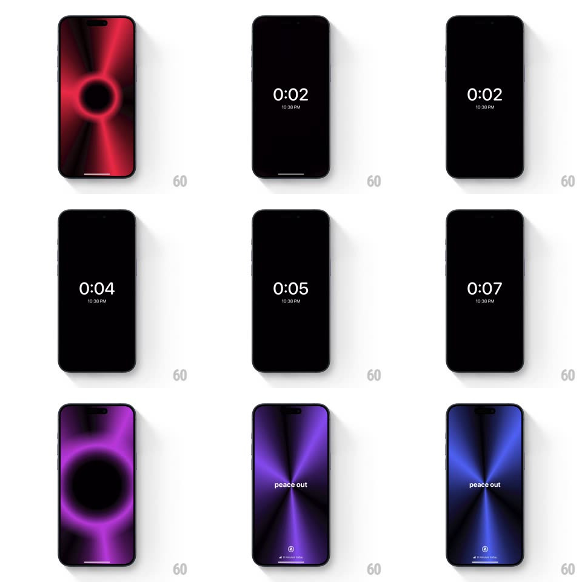

Media
Frame-by-frame

Rebuild this interaction 1:1: Peace Out's timer transition - a red radial sunburst with "tap to start" collapses into a black void ring, the timer counts on black, and on completion the sunburst expands back out shifted to violet and blue with "peace out".

Rebuild this interaction 1:1: Peace Out's timer transition - a red radial sunburst with "tap to start" collapses into a black void ring, the timer counts on black, and on completion the sunburst expands back out shifted to violet and blue with "peace out". ## Integration Integration: stack-agnostic spec - springs given as stiffness/damping, timed motions as duration + curve; map every value to your framework and animation library of choice. ## Scene Full-bleed radial gradient of red light rays bursting from center, "tap to start" centered, small footer text. Timer state: pure black, large thin "0:03" with "10:38 PM" beneath. End state: the same sunburst re-hued violet-to-blue, "peace out" centered. ## Motion spec Pattern: gradient collapse/rebirth around a minimal timer. - Tap: the sunburst implodes - rays pinch toward center and darken (600ms, ease-in) forming a glowing red ring that shrinks into a black hole; the ring's edge light stretches and flickers as it collapses. - The timer fades in only after the void is fully black (200ms) - digits tick each second with a quiet opacity pulse (1 -> 0.7 -> 1, 300ms). - On completion: the void ring reappears and bursts outward - violet light floods from center (700ms, ease-out), rays rotating slowly (~4deg/s) as they expand; the hue sweeps violet -> blue during the expansion. - "peace out" fades in mid-expansion (300ms); the footer icon row returns last. ## Calibration - The sunburst is one animated gradient - rays are radial streaks from a single center, reused (re-hued) at both ends. - Timer digits are the only white element during the session; nothing else lights the black. ## Reduced motion Crossfade gradient -> black -> gradient; no implosion ring. ## Don't miss - The collapse ring glows hot pink at its rim - the brightest moment of the whole sequence. - The returning burst is a different hue family (violet/blue) than the opening (red) - the session "cooled down".